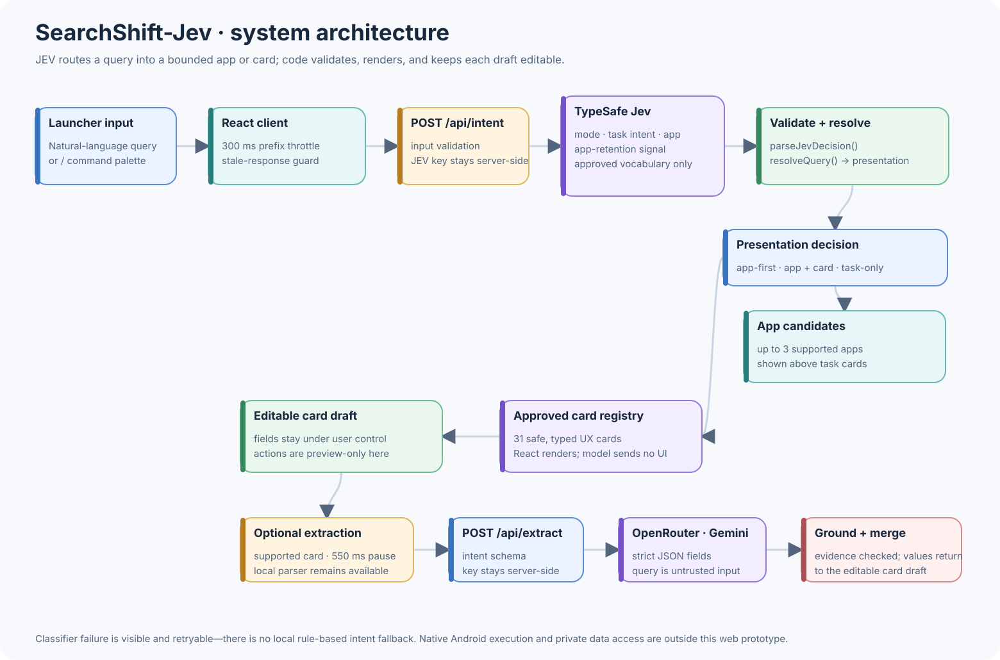

React · TypeScript · JEV · Gemini
SearchShift-Jev: A Launcher That Understands Intent
Start with what you want to do. One search box finds an app, turns a thought into an editable task card, or opens a menu of quick commands.

Starting with the task
I built SearchShift-Jev to explore an Android launcher where people can describe a small task without first choosing an app. A quick calculation, a shopping list, or a timer should be easy to reach from the same search box used to open Spotify.
The current implementation is a React browser prototype. It lets me test the interface, classification, and editable card states before connecting native Android capabilities.
Designing the experience
The search bar sits inside a shared task surface, with app suggestions above the widgets. While a query could still be an app search, those suggestions remain available rather than disappearing as soon as a task is detected.
Typing / opens 31 registered cards, grouped into everyday tasks, time and tools, find and go, and quick controls. The menu makes the available actions discoverable without requiring people to guess a phrase.
Cards have their own fields and controls. A calculation shows the computed result; a checklist lets the user edit and save items; a timer has a duration and start/pause state.
Classification with clear limits
JEV receives the query and chooses from approved task categories and app candidates. The application validates that response before deciding whether to show apps, a task card, or both.
The model selects an existing React component. It does not generate markup or execute actions. Query requests are throttled as the user types, and stale responses are ignored so an older prediction cannot overwrite newer input.

Turning text into editable fields
Choosing the right card is only part of the task. Names, dates, amounts, and other details also need to reach the correct fields.
Local parsers handle supported values and calculations. Optional Gemini extraction through OpenRouter helps fill supported cards after a pause in typing. Returned fields must match a fixed schema and have evidence in the original query; ungrounded values are rejected.
The result remains a draft the user can review and change. Tests cover parsing, field validation, unsupported values, malformed responses, and provider failures.
The stack
React + Vite — the launcher interface and reusable card components.
 TypeScript — approved intents, validated responses, and shared field types.
TypeScript — approved intents, validated responses, and shared field types.
JEV — intent classification and likely app selection through server-side handlers.
Gemini through OpenRouter — optional extraction of query-grounded card fields.
What the prototype demonstrates
SearchShift-Jev demonstrates the interaction from a typed query to a useful app suggestion or task card. It includes browser interactions such as calculations, editable lists, and countdowns.
Native messaging, calendar writes, device controls, local file access, and live forecasts still need their own integrations. The prototype keeps those actions as previews rather than implying that classification alone completes the task.